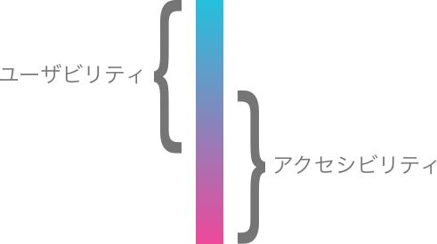
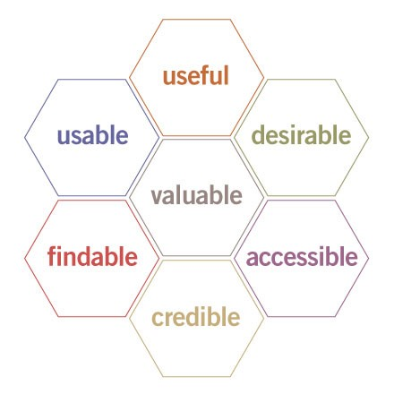

QUREOで アクセシビリティ
桝田 草一
自己紹介
- 桝田 草一 a.k.a ますぴー @masuP9
- FRESH LIVE
- ウェブフロントエンド
- アクセシビリティエヴァンジェリスト（アクセシビリティおじさん）
目次
- 理解 : アクセシビリティとは？
- 現状 : QUREOはアクセシブルか
- 動機 : アクセシビリティやっていく理由
- 行動 : なにをやっていくのか
理解 : アクセシビリティとは？
大いなる誤解
アクセシビリティ = 障害者対応
いつでも、どこでも、だれでも
アクセス + できる（しやすい）
例えば...
キーボードだけで操作ができれば
マウスが壊れたときでも
マウスが使えなくても
使える
動画に字幕がついていると
音が出せないときでも
耳がきこえづらくても
内容が理解できる
文字がくっきりはっきりしていると
眩しい太陽の下でも
目が見えにくくても
読める
だれかにとっての使いにくいは、
だれかにとって使えない
だれかにとっての使いやすいは、
だれかにとって使える
アクセシビリティとユーザビリティに
明確な境目は無い

とは？
プログラミングの基礎全てを、いつでもどこでも学べるサービスです。
+ だれでも
もうすこし言うと
UXの構成要素であり、UIの品質
UXハニカム

とはいえ障害当事者にも
BBC Interview about Click2Speak and ALS - YouTube & Click2Speak – Innovative On-Screen Keyboard
現状 : QUREOはアクセシブルか
プログラミング教育を
アクセシブルにしている
サービスが稼働して
学んでいるユーザーがいる
圧倒的にアクセシブル💪
こどもがペルソナ
めちゃくちゃエッジなユーザー🚸
例： WCAG 3.1.5 読解レベル
固有名詞や題名を取り除いた状態で、テキストが 前期中等教育レベルを超えた読解力を必要とする場合は、 補足コンテンツ又は前期中等教育レベルを超えた読解力を必要としない版が利用できる。 (レベル AAA)
※前期中等教育レベル = 中学校卒業程度
わかりやすい！すごい！
コンテンツの気配りがすごい！
https://www.youtube.com/watch?time_continue=9&v=gMt61k7YuFY
キャプション（かつルビつき）
結果として音声情報なしでもコンテンツ取得可能
画像文字にテキスト情報ちゃんと入ってる！
機械可読性（マシンリーダブル）の確保
SEO / 音声読み上げ などなど
要改善
UI周り : HTMLができることをHTMLにさせよう
リンクは
a 要素で
遷移先の明示、キーボードでの操作、別タブで開く、リンクURLのコピー
ボタンは
button要素で
=> キーボードでの操作
見出しを
hx 要素で
=> 機械可読性をさらにUP
マウス操作に依存しない
hover で出てくる（変わる）コンテンツ
=> キーボード操作、タッチデバイス操作（タブレット対応にも）
エディターは結構大変そう…😇
色（コントラスト）
ほとんど問題なく見やすい！
一部 UI テキストがコントラスト低いところが
動き
動き続ける表現に関しては慎重に
（注意力欠如障害 : ADHD にとっては動きに気を取られて作業に集中できなくなる）
ADHDはクラスに2,3人程度いる可能性が高い
via
Data and Statistics | ADHD | NCBDDD | CDC
表現、世界観、没入感との兼ね合いもあるので設定で抑制できると良さそう
- iOS 「視差効果を減らす」「アニメーション抑制」
- Twitter 動きを減らす etc ...
アクセシビリティやっていく理由
障害者差別解消法
2016年4月1日施行
- 国の行政機関や地方公共団体、 民間事業者による障害を理由とする差別を禁止する
- 障害を理由とする差別には、「合理的配慮の不提供」も含まれる
ウェブサイト、ウェブサービスも「情報アクセシビリティ」として対象となる。
引用 : （表）行政機関と事業者のちがい
行政機関等 民間事業者 不当な差別 不当な差別的取扱いをしてはならない 合理的配慮 社会的障壁の除去の実施について必要かつ合理的な配慮を しなければならない（義務） 社会的障壁の除去の実施について必要かつ合理的な配慮をするように 努めければならない （努力義務）
海外では、同等の法律を根拠法にした訴訟も増加
公共調達という考え方
行政機関等は合理的配慮が義務。行政機関が作成・運営するすべてのウェブコンテンツが対象。
行政機関はアクセシブルなプロダクトを選ぶ義務がある。
総務省の若年層に対するプログラミング教育の普及推進事業 のうち8件が当事者が対象。
これはチャンス！
行動 : なにをやっていくのか
できるところから一歩ずつ
要改善であげた点からでも
例えば親向け管理画面からやる。LPからやる。
親や教室担当者が当事者の場合も。
アクセシビリティを知ろう！


おすすめです！
WCAG : Web Contents Accessibility Guidelines読んでみよう
難しい😇
もくもく会やってます！
6.15 金曜日 ナビゲーションのお話です
独自ガイドラインですが、
のほうが読みやすいかも
困ったら私までご相談ください。なんでも。
やっていきましょう💪